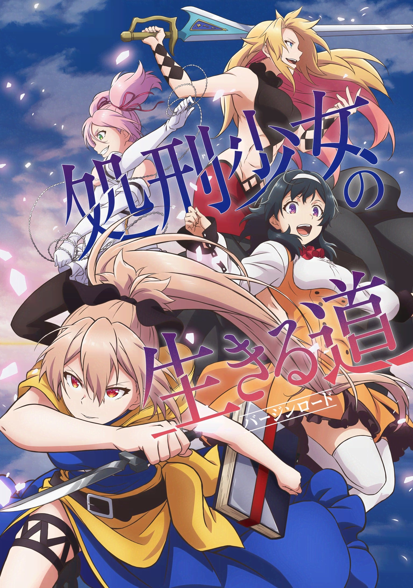
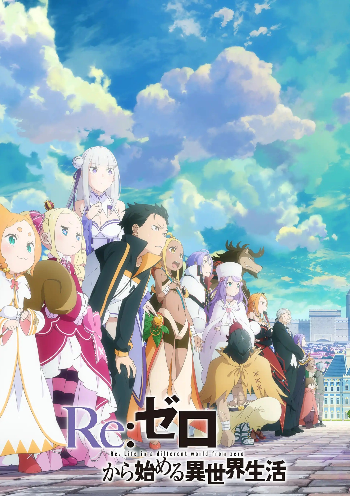
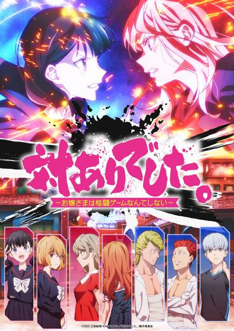

追番封面：完整显示的两种方案
共同点：封面一律 5:7 完整显示，卡片高度由封面决定，不裁切、不加模糊和光晕。两版都只在 PC / 平板使用，手机仍然不放封面。封面使用本地开发库里的三张真实图。
方案 A · 相纸画廊（推荐）
竖封面本来就是竖的，所以卡片也做成竖的：封面在上，信息在下，一排放 3~5 张，和番剧周历里的相纸卡片是同一种语言。标签压成一行，多出来的淡出，完整标签留在点开的详情里；状态切换和移出收进状态章的小菜单。

想看♡♡♡♡♡♡0 / 14
处刑少女的生存之道
百合J.C.STAFF异世界＋ 标签

看完♡♡♡♡♡♡1 集
Re:从零开始的异世界生活 第三季
后宫2026年7月异世界轻小说改

在看♡♡♡♡♡♡11 集
感谢对战。〜大小姐才不玩格斗游戏〜
＋ 标签
- 优点：封面最大、永不裁切；同一行高度天然一致；宽屏利用率高。
- 代价：「想看 / 观望 / 在看 / 看完」分段和「移出」不再常驻，要点状态章或 ⋯ 才出现；一行放的卡片多了，单卡信息更少。
方案 B · 横版定高
保留现在的横向行卡，但卡片高度固定为 236px，封面按高度算宽度（约 150px），所以必然完整且不留白。右边内容必须放得进这个高度：标签压成一行，状态分段和移出收进 ⋯。
看完♡♡♡♡♡♡1 集
Re:从零开始的异世界生活 第三季
后宫2026年7月异世界轻小说改
在看♡♡♡♡♡♡11 集
感谢对战。〜大小姐才不玩格斗游戏〜
＋ 标签
- 优点：改动最小，信息密度和现在接近，一眼能看到进度。
- 代价：宽屏双列时右侧内容仍偏空；同样要把分段和移出收起来。